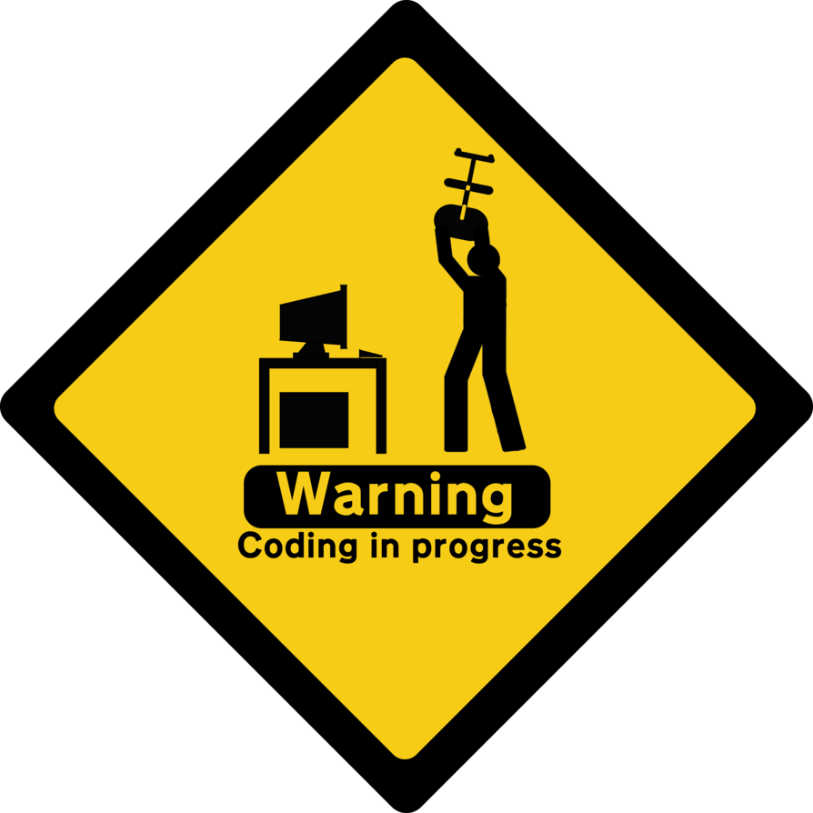

Знакомство
Привет! Меня зовут Дмитрий Горчаков. На данный момент я работаю HR-специалистом в крупной федеральной компании.
И могу сказать, что за три года я прошёл неплохой карьерный путь. Однако всё чаще я начинал себя ловить на мысли, что данный вид деятельности
мне не совсем интересен и комфортен, что подбором персонала я не готов заниматься ближайшие лет 5-10.
И я начал искать своё профессиональное поприще. А нашёл его в сфере IT. Уже на протяжении года я изучаю различные технологии
для своего досуга и, возможно, дальнейшего трудоустройства. Данный сайт - для тренировки моих скиллов ;)


Почему HR?
Мог ли я подумать в школе, что буду строить карьеру в IT? Вряд ли! Я даже не знал, что такие профессии существуют)))
Да, уроки информатики были увлекательны. Но на тот момент, я в принципе, не хотел продолжать обучение, даже идти в 10 класс :)
Родители всё же настояли получить 11 классов и
высшее образование. Их парадигму успешности было не пошатнуть, да и я наверняка не знал, с чем хочу связать свою жизнь.
Поэтому на тот момент я решил получить любое бюджетное образование,
я совершенно не знал, что такое "Управление персоналом". Как итог - окончил школу с золотой медалью и универ с красным дипломом. А после нужно было искать работу.
Куда ещё можно было податься с полученными знаниями?
Вектор развития в IT
Мне повезло, я начал своё развитие в HR-департаменте крупной компании, ведь это отличный способ посмотреть
на мир профессий на парктике и подобрать что-то для себя))
Работа с вакансиями в IT блоке была наиболее интересной. Увлекательные задачки на логику, математику и технические задачи.
Каждый раз я их выполнял вместе с кандидатами. Интересные задачи были не только в IT, но и в логистике или финансах. Так я изучил Excel, VBA, SQL.
Со временем у меня возник конфликт - менять ли профессиональный вектор? Ведь я инвестировал достаточно много времени в HR специальность.
Но чем дольше я работал, тем больше понимал - либо я остаюсь в HR и строю карьеру здесь, либо стартую новую для себя сферу, где мне точно будет
интересно. Я выбрал последнее.

Шаги изучения

Начал я своё знакомство с IT с изучения "физики" компьютера. У меня была потребность понять, как конкретно работает мой компустер. Я перелопатил кучу литературы пока
не нашёл дико классную книгу -
Ч.Петцольд "Код.Тайный язык информатики" .
Автор начинает повествование с истории двух мальчиков, живущих
друг напротив друга, которые изобретают способ общения с помощью фонарика (бинарной системы), а
заканчивает устройством операционной системы))

Сегодня компьютер совсем не имеет смысла без сети Интернет. Я начал искать подходящую литературу, чтобы понять как я обмениваюсь сообщениями в чате,
как работает мой любимый Интернет-магазин, что позволяет мне скачать книжки и слушать музыку онлайн. Остановился на работе
В. Олифер, Н. Олифер «Компьютерные сети. Принципы, технологии, протоколы» (5-е издание).
Книга не такая детская как предыдущая. Однако позволяет узнать историю его создания и понять основные принципы устройства Интернета.
Потом я полез в алгоритмы для программистов и потонул. Понял, что пока я не начну изучать языки программирования, я не созрею для её изучения.

Наконец, я понял, что пора изучать язык программирования, чтобы понимать, как устроена софтверная сторона компьютерных систем.
Прицелился в Java. Отталкивался от популярности (оценил, в том числе, как HR) - чем популярнее и старее язык, тем
проще его будет изучить. Ведь, вероятнее всего, я с легкостью смогу нагуглить ответы на все свои вопросы, плюс на рынке джависты востребованы))
Изучение на первом этапе состояло из анализа хорошей книги для новичков -
Г. Шилдт Java, Руководство для начинающих плюс ютубчик.
Большого выхлопа такой подход мне дал. Деньги на курсы тратить не хотелось, а получить практику и более "вкусную" теорию - хотелось. И рыбку съесть и ... не получилось, нашёл компромисс - недорогие курсы JavaRush .
Куча задач, автопроверка заданий и внятная теория. Прошёл 30 уровней и остановился для закрытия возникших вопросов.

Практически всё изучение Java полностью происходит в связке с консолью. От вывода первого сообщения "Hello world!" до ввода адреса файла для последующего парсинга и проработки логики.
30-й уровень, а ты всё сидишь и пишешь приложения, которые с клиентом общаются только с помощью консоли((
И тут я подумал, что хочу знать о клиент-серверной архитектуре, о базах данных, о фронтовой части.. Короче, понять как работают коммерческие проекты. Мотивация начинала "просидать" от такой замкнутости на консоли.
Я думал, что стою на месте и уже никогда не смогу освоить IT.
Я начал изучать HTML5, CSS3, JavaScript, SQL, устройство API и многое-многое другое. Конечно, не без помощи друзей ;)
Ура! Я начал понимать, как это работает. Пусть верхнеуровнево, пусть я не напишу пока гигантсткий ИМ, но я уже понимаю, что происходит "под копотом"!!!
При нужном уровне мотивации уже можно создавать свои первые проекты,
оттачивать навыки и искать работу мечты ;)
По вопросам сотрудничества
Я открыт к интересным предложениям по работе. Если у Вас есть такие, готов обсудить :)